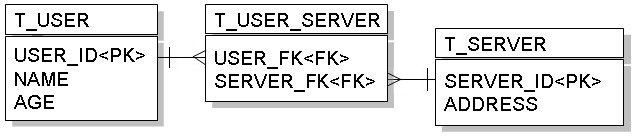
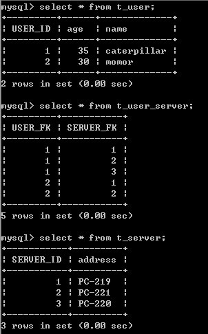

|
|
在資料庫表格上要進行多對多對應，可以藉由一個中介表格來完成，也就是藉由多對一、一對多來完成多對多關聯。  多對多由於使用了中介表格，在查詢效率不彰，且在程式的物件模式上，多對多會使得物件與物件之間彼此依賴，並不是一個很好的設計方式，在設計上應避免使用 多對多關係。 若要設計多對多關係，則可以使用@ManyToMany的標註，例如設計User類別如下：
package onlyfun.caterpillar; 其中@JoinTable中name設定的是中介表格的名稱，並設定對應的欄位名稱。而Server可以如下設計：
package onlyfun.caterpillar; 這邊直接透過mappedBy屬性設定了雙向關聯，一個儲存時的例子如下： Server server1 = new Server(); server1.setAddress("PC-219"); server1.setUsers(new HashSet()); Server server2 = new Server(); server2.setAddress("PC-220"); server2.setUsers(new HashSet()); Server server3 = new Server(); server3.setAddress("PC-221"); server3.setUsers(new HashSet()); User user1 = new User(); user1.setName("caterpillar"); user1.setServers(new HashSet()); user1.setAge(new Long(35)); User user2 = new User(); user2.setName("momor"); user2.setServers(new HashSet()); user2.setAge(new Long(30)); // 多對多，互相參考 user1.getServers().add(server1); user1.getServers().add(server2); user1.getServers().add(server3); server1.getUsers().add(user1); server2.getUsers().add(user1); server3.getUsers().add(user1); user2.getServers().add(server1); user2.getServers().add(server3); server1.getUsers().add(user2); server3.getUsers().add(user2); EntityManager entityManager = JPAUtil.getEntityManagerFactory().createEntityManager(); EntityTransaction etx = entityManager.getTransaction(); etx.begin(); entityManager.persist(user1); entityManager.persist(user2); etx.commit(); entityManager.close(); 執行後資料庫的內容如下：  如果您使用以下方式進行查詢： EntityManager entityManager = JPAUtil.getEntityManagerFactory().createEntityManager(); EntityTransaction etx = entityManager.getTransaction(); etx.begin(); user1 = entityManager.find(User.class, new Long(1)); etx.commit(); System.out.println(user1.getServers()); entityManager.close(); 若是使用Hibernate作為JPA的實作，則首先會先查詢出T_USER表格的內容，再透過left out join的方式查詢對應的T_SERVER中的資料，如以下所產生的SQL語句： Hibernate:
select user0_.USER_ID as USER1_0_0_, user0_.age as age0_0_, user0_.name as name0_0_ from T_USER user0_ where user0_.USER_ID=? Hibernate: select servers0_.USER_FK as USER1_1_, servers0_.SERVER_FK as SERVER2_1_, server1_.SERVER_ID as SERVER1_1_0_, server1_.address as address1_0_ from T_USER_SERVER servers0_ left outer join T_SERVER server1_ on servers0_.SERVER_FK=server1_.SERVER_ID where servers0_.USER_FK=? |